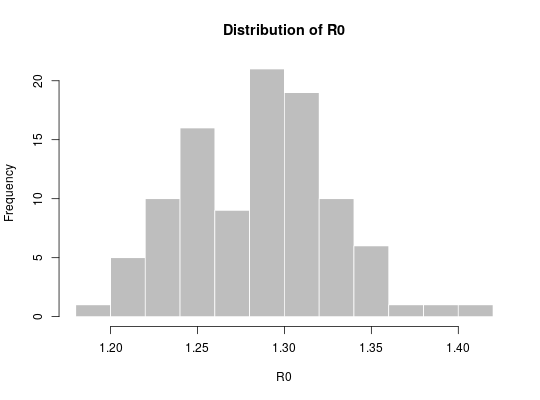

The function r2R0 can be used to transform a growth rate into a
reproduction number estimate, given a generation time distribution. This uses
the approach described in Wallinga and Lipsitch (2007, Proc Roy Soc B
274:599–604) for empirical distributions. The function lm2R0_sample
generates a sample of R0 values from a log-linear regression of incidence
data stored in a lm object.
r2R0(r, w, trunc = 1000) lm2R0_sample(x, w, n = 100, trunc = 1000)
| r | A vector of growth rate values. |
|---|---|
| w | The serial interval distribution, either provided as a
|
| trunc | The number of time units (most often, days), used for truncating
|
| x | A |
| n | The number of draws of R0 values, defaulting to 100. |
It is assumed that the growth rate ('r') is measured in the same time unit as the serial interval ('w' is the SI distribution, starting at time 0).
## Ebola estimates of the SI distribution from the first 9 months of ## West-African Ebola oubtreak mu <- 15.3 # days sigma <- 9.3 # days param <- gamma_mucv2shapescale(mu, sigma / mu) if (require(distcrete)) { w <- distcrete("gamma", interval = 1, shape = param$shape, scale = param$scale, w = 0) r2R0(c(-1, -0.001, 0, 0.001, 1), w) ## Use simulated Ebola outbreak and 'incidence' to get a log-linear ## model of daily incidence. if (require(outbreaks) && require(incidence)) { i <- incidence(ebola_sim$linelist$date_of_onset) plot(i) f <- fit(i[1:100]) f plot(i[1:150], fit = f) R0 <- lm2R0_sample(f$lm, w) hist(R0, col = "grey", border = "white", main = "Distribution of R0") summary(R0) } }#> Warning: 22 dates with incidence of 0 ignored for fitting#> Min. 1st Qu. Median Mean 3rd Qu. Max. #> 1.198 1.254 1.289 1.284 1.310 1.420